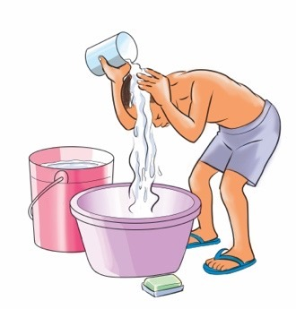
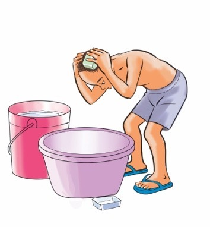
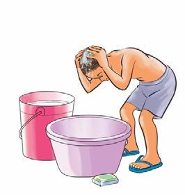
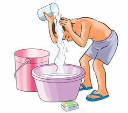
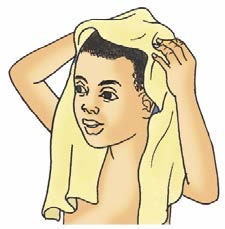
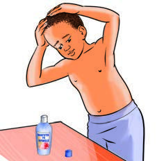

I know the steps for washing my hair.
I know the steps for washing my hair.

I wash my hair
by following
these steps.


1
2
I pour water on
my hair.
I apply soap on
my hair.


3
4
I scrub my hair.
I rinse my hair with
clean water.


5
6
I dry my hair
with a towel.
I apply hair oil to
my hair.